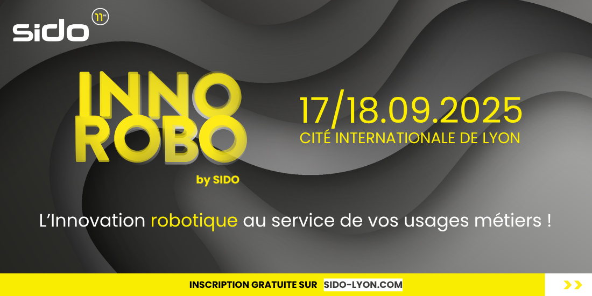

Innorobo by SIDO : Le salon européen de référence en robotique de service
Par O. Abdelwahd · Publié le 22 juillet 2025

Rendez-vous à Innorobo, le plus grand salon européen de la robotique. Source : SIDO
Les 17 et 18 septembre 2025 à Lyon, le salon SIDO franchit une nouvelle étape dans son engagement en faveur des technologies innovantes en inaugurant Innorobo by SIDO, un espace inédit entièrement dédié à l’innovation robotique.
Cette nouvelle zone thématique s’adresse à l’ensemble des professionnels – industriels, logisticiens, acteurs du BTP, professionnels de la santé ou encore représentants de collectivités – en quête de solutions concrètes, innovantes et immédiatement applicables pour optimiser, automatiser ou transformer leurs processus métiers grâce à la robotique.
Une vitrine complète de la robotique appliquée
Sur cet espace, les visiteurs découvriront un panorama riche et actualisé des technologies robotiques : robots industriels, cobots (robots collaboratifs), robots mobiles autonomes (AMR), robots humanoïdes, et bien plus encore. Chaque solution présentée s’inscrit dans une démarche d’usage, avec des démonstrations, des retours d’expérience concrets et des cas d’application sectoriels illustrant comment la robotique s’intègre dans les métiers d’aujourd’hui.
Chaque secteur trouve sa place dans ce salon
Avec des conférences inspirantes, des pitchs technologiques enthousiasmants et une multitude de stands et d'ateliers thématiques, Innorobo by SIDO propose un programme riche, conçu pour nourrir la réflexion stratégique des décideurs dans une atmosphère propice aux échanges et au réseautage avec les acteurs clés de la robotique : fabricants, intégrateurs, startups innovantes, centres de recherche et experts métiers.
Pensé comme un véritable hub d’innovation et d’opportunités, l’événement offre une vision concrète et accessible de ce que la robotique peut déjà apporter aux entreprises. Les solutions présentées sont matures, opérationnelles et prêtes à être déployées ou adaptées selon les besoins spécifiques de chaque secteur.
Innorobo by SIDO s’impose comme un événement incontournable pour tous les professionnels qui souhaitent mieux comprendre, anticiper et intégrer les usages robotiques de demain. Plus qu’un simple espace d’exposition, c’est un lieu d’échanges, d’inspiration et de décisions, où se dessine l’avenir de la robotique dans les métiers.